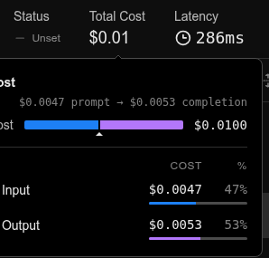
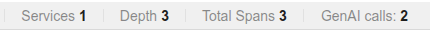
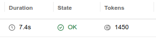
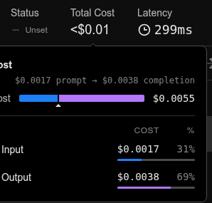
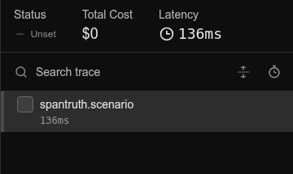
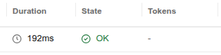
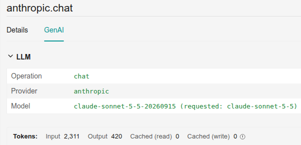
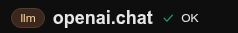
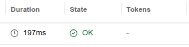

What six LLM telemetry bugs look like in Phoenix, MLflow and Jaeger
By Chris Krah. Plexito, my company, maintains spantruth, the tool this page uses. Measured on November 26, 2026 · the report · raw data
spantruth compares each span that an instrumentation library writes with what the provider sent. A wrong span is easy to dismiss in the abstract. So I sent six wrong spans to three self-hosted backends and read what each one shows.
In five of the six cases, all three backends showed a wrong number or a wrong status. In the sixth, MLflow was right and the other two were wrong.
| Bug | Right value | Phoenix | MLflow | Jaeger |
|---|---|---|---|---|
| Double span | 1,450 tokens, $0.0050 | $0.0100 | 1,450 tokens | 2 GenAI calls |
| Cache-blind tokens | 6,179 tokens, $0.0079 | 1,564 tokens, $0.0055 | 1,564 tokens | Input 1,187 |
| Ghost span | 1 call, 1,913 input tokens so far | No call, $0 | No tokens | No call |
| Vanishing tokens | 2,450 tokens | 0 tokens, $0 | No tokens | No tokens |
| Phantom tokens | 419 output, 2,730 total | 420 | 2,731 total | 420 |
| False OK | Error: the connection dropped | OK | OK | No error |
Costs are at list price. Claude Sonnet 5.5 costs $2 input, $0.10 cache read, $2.50 cache write and $10 output per million tokens. Phoenix priced input and output tokens at these rates. MLflow's default traces table shows tokens and no cost. Jaeger shows no cost.
Each receipt is one spantruth scenario. It ran against a local fake provider, with the library version that has the bug. The same spans went to spantruth's grader and to Arize Phoenix 22.1.0, MLflow 3.18.0 and Jaeger 2.23.0. All three ran on 127.0.0.1, with no account and no network. I read every number below from a backend's page or API. The IDs next to each heading, such as ST02, are the bug classes.
Double span: the cost doubles ST02
The Anthropic Python SDK writes its own span for each call since version 1.14.0. Add the OpenTelemetry GenAI instrumentation 1.3b0 and leave the SDK's tracing at its default: one call now has two spans with token counts. The call was 1,187 input and 263 output tokens, $0.005004 at list price.

tokenCountTotal stays at 1,450.

The fix is in the double spans write-up: let one side report the call, for example with ANTHROPIC_OPEN_TELEMETRY=false.
Cache-blind tokens: the cached call looks cheap ST03
The call read 4,096 tokens from the prompt cache and wrote 519 to it. It also sent 1,187 uncached input tokens and got 377 output tokens. That is 6,179 tokens and $0.0078511. OpenLIT 1.45.0 puts 1,187 in gen_ai.usage.input_tokens. The OpenTelemetry GenAI conventions define that count to include the cached tokens. OpenLIT puts the cache counts in their own attributes.

MLflow shows 1,564 tokens. Its trace metadata keeps the cache read and write counts apart. Jaeger shows the span's four counts as they are: input 1,187, output 377, cache read 4,096 and cache write 519.
Ghost span: the call is not there ST01
The app reads two events of a stream and closes it. By then the provider has sent 1,913 input tokens. OpenLLMetry 0.62.4 (opentelemetry-instrumentation-anthropic) never ends its span, so it never exports it.

MLflow shows one trace, State OK, with no tokens. Jaeger shows one span, the app's.
Vanishing tokens: the call costs nothing ST05
The app streams a chat completion through with_streaming_response. The stream carries 2,137 input and 313 output tokens. OpenLLMetry 0.62.4 (opentelemetry-instrumentation-openai) sends its span with no token count.

Phoenix shows the span with 0 tokens and a Total Cost of $0. Jaeger's GenAI tab for the span has no token line.
Phantom tokens: one token too many ST04
A stream ends with 419 output tokens. OpenLLMetry 0.62.4 adds the placeholder of 1 from message_start to the final count from message_delta. It reports 420 (openllmetry#4377).

The cost moves in the fifth decimal: Phoenix shows 0.008822, and the list cost is $0.008812. That is small for one call. But it happens on every stream, and the token count is wrong wherever you look.
False OK: a dropped stream is a success ST07
The connection drops mid-stream, and the app gets openai.APIConnectionError. OpenLLMetry 0.62.4 (opentelemetry-instrumentation-openai) ends the span with status OK (openllmetry#4535).

openai.chat, OK.
otel.status_code=OK.An error rate built on span status leaves this failure out.
Check your own versions
These are the versions that the nightly report pins, not the latest releases. To see what the versions in your Python project get wrong, run this in its directory. It needs no API key, and it does not run your code:
uvx spantruth@0.5.0 doctorIt tests the libraries it recognizes against the same fake provider. It knows nothing about your backend. It tells you which spans are wrong, and this page shows what such spans look like.
How this was measured
Each receipt ran spantruth's own driver in the library's pinned environment. The driver sent its spans to a tee on loopback. The tee kept a copy for the grader and sent the same bytes to the backend. I read each backend's API: Phoenix GraphQL, MLflow trace search and Jaeger's trace API. I took the screenshots with Playwright, in a browser that blocked every request to another host. The six cells ran twice, each time into new backend data, and every backend number was the same.
The results directory has the full table, each backend's raw answers, the full screenshots and the commands. To run one receipt from a spantruth clone, with Phoenix on port 16106:
uv run python results/2026-11-26-receipts/scripts/cell.py \
otel-official-sdk-on anthropic/basic phoenix my-double /tmpI did not measure Langfuse. It needs Postgres, ClickHouse, Redis and object storage, and its documented setups use containers. I did not run Grafana Tempo or Opik in this round. I did not measure a real provider, async calls, other libraries with the same bugs, or how each backend sums many calls. The other four bug classes do not change a token count or a cost, so they are not here.
This is six of ten
Here are the ten bug classes, and here is the report that tests each library for them every night. If a receipt is unfair to your library or your backend, open an issue with your versions.